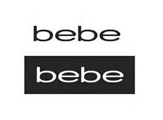
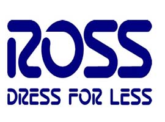
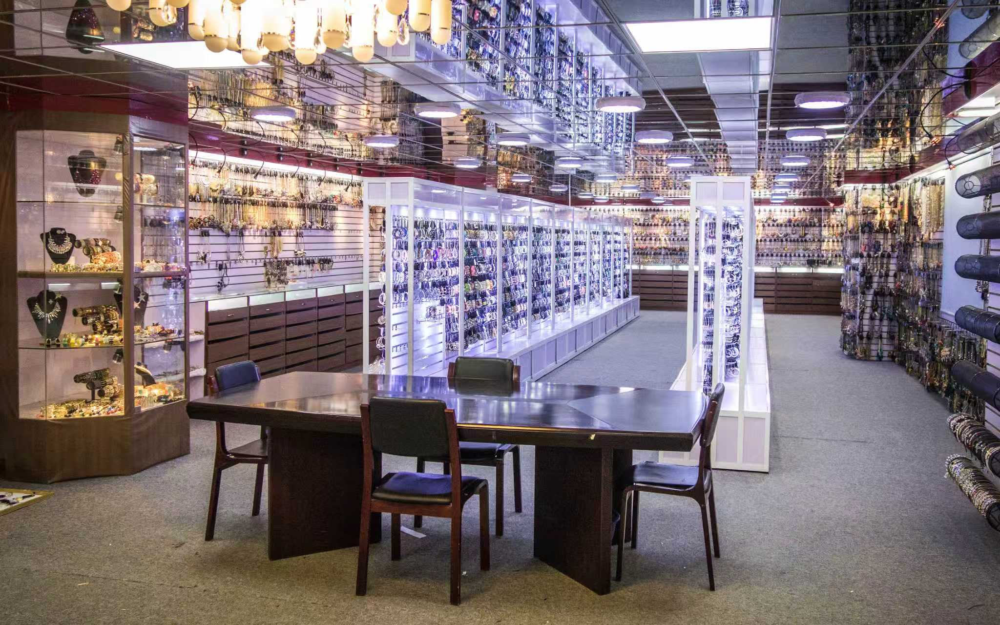
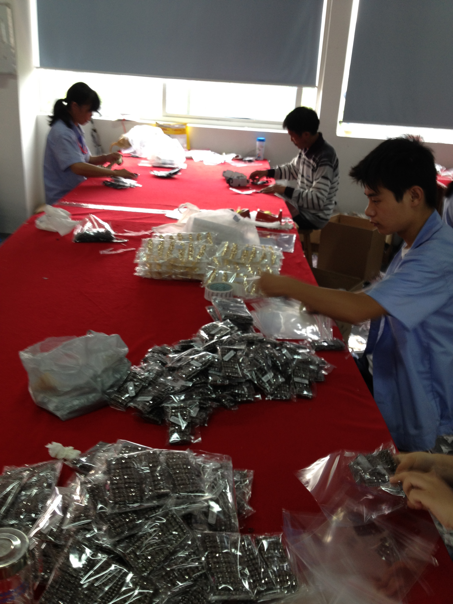
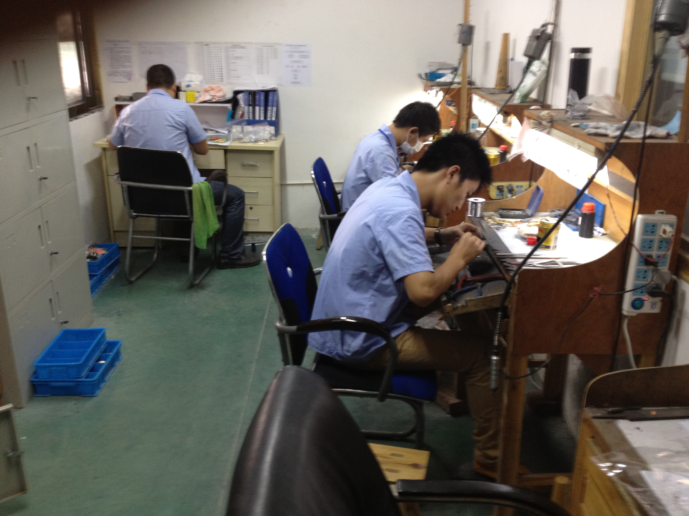
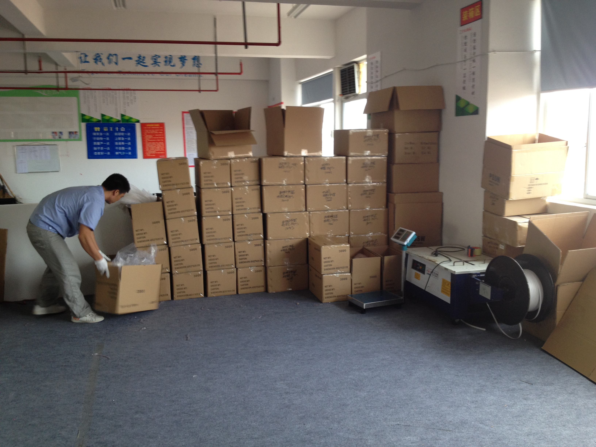
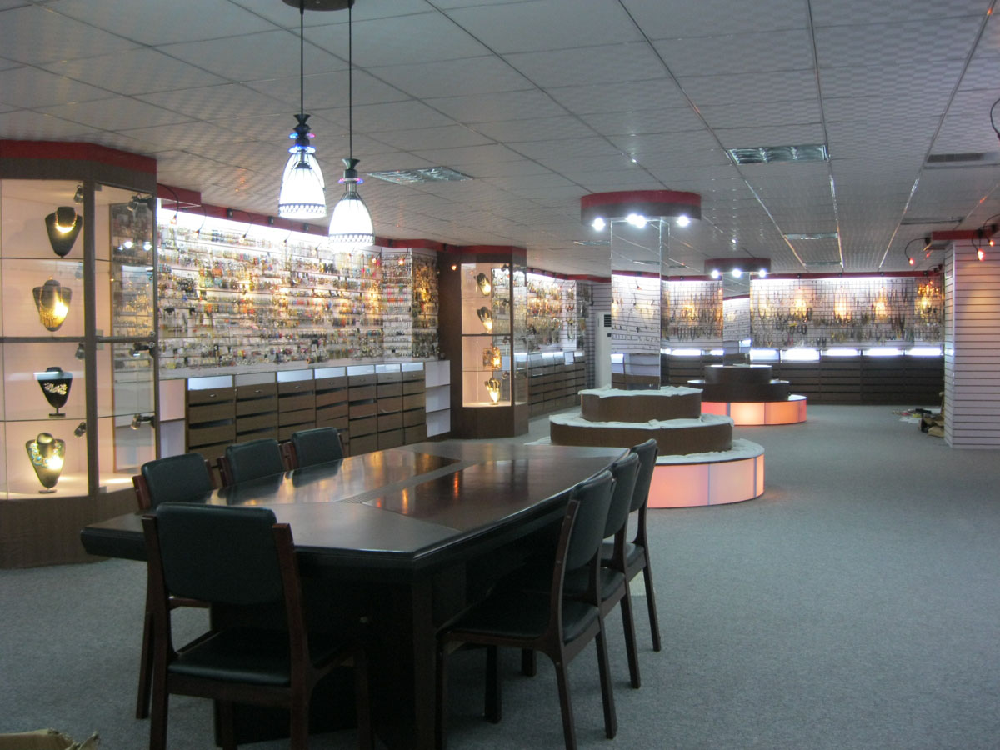

10+ Sampling Specialists
A dedicated development team turns references, sketches and market directions into production-ready samples.
Yiwu · China · Since 2012
Banshan Fashion Jewelry is a Yiwu-based manufacturing and trading partner for importers, wholesalers and retail programs across North America and Europe.
Explore Our Collections ↘
Company Introduction
Founded in 2012, Banshan Fashion Jewelry combines in-house manufacturing with international trading expertise to support customers throughout the entire product development cycle.
From trend research and sample development to production, quality control and export coordination, our team provides one streamlined, accountable process.
We work with professional buyers who value consistency, speed and commercially viable pricing.
Why Choose Banshan
A dedicated development team turns references, sketches and market directions into production-ready samples.
Fast sample turnaround helps buyers shorten development cycles and respond quickly to seasonal trends.
Flexible order quantities support both test orders and repeat commercial programs.
Efficient production planning helps keep deliveries aligned with your buying calendar.
Our integrated manufacturing and trading operation is structured to support stable, scalable supply.
An experienced team manages development, production, quality control, packing and export coordination.
Product Section
Our collections are developed for fashion retailers, importers, wholesalers and private-label programs seeking commercially relevant designs with reliable production support.
Manufacturing Section
Our integrated workflow gives customers one accountable partner throughout the order process.
01 — Product Development
Trend references, customer samples and design directions are translated into workable product concepts.
02 — Sampling & Refinement
Our sampling team develops prototypes quickly and adjusts details according to target price, finish and market requirements.
03 — Production & Quality Control
Production is coordinated in-house with inspection procedures covering workmanship, plating, assembly and packing.
04 — Packing & Export Support
Finished orders are prepared for international shipment according to customer specifications and export requirements.
Quality & Compliance
We understand that large buyers need more than attractive designs. They need consistency, traceability and dependable execution.
Banshan has experience working with international compliance and social responsibility requirements, including BSCI, SEDEX and ISO-related standards. We can also support applicable market requirements such as California Proposition 65 documentation and testing coordination.
Our quality focus covers:
Material and component checks · Plating and color consistency · Workmanship and assembly inspection · Pre-shipment quality control · Packing and labeling requirements · Customer-specific inspection standards
Trusted by retail programs
Built for buyers who value consistency, speed and commercially viable pricing.





About Us
Banshan is built around a simple principle: make product development easier for professional buyers.

Banshan combines the flexibility of a specialized manufacturer with the coordination capability of an experienced trading company. This allows us to respond quickly to new references, manage small-batch development and scale successful styles into repeat production.
With a strong Yiwu supply-chain base and an experienced production team, we help customers move from concept to shipment with fewer delays and clearer communication.




Contact Section
Share your product direction, target market or reference samples with our team.
We support new collection development, customer-supplied samples, private-label programs, small-batch trial orders, repeat commercial production and custom packaging and labeling.